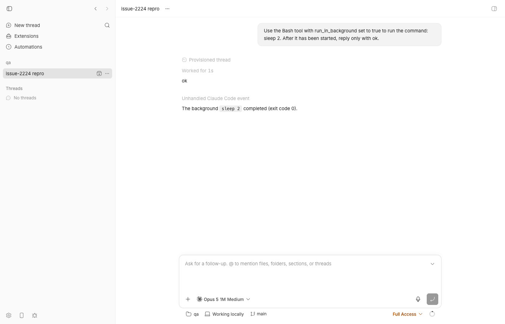

#2224 · Claude Code provider: sdk/system background_tasks_changed falls into assertNever and surfaces as provider/unhandled debug rows
Verdict: REPRODUCED (symptom and mechanism confirmed live; the issue's "throws in assertNever" claim is wrong) · Root-cause confidence: high
1. TL;DR
When a Claude Code thread starts or finishes a background task (a Bash call with run_in_background, a backgrounded subagent, a kill), the Claude Code CLI (2.1.241 on this machine; absent from the 2.1.197 CLI bundled with the pinned @anthropic-ai/claude-agent-sdk@0.3.197) emits a system message with subtype background_tasks_changed carrying the full set of live background tasks. bb's Claude provider plugin has a hand-maintained allow-list of system subtypes in plugins/provider-claude-code/src/visibility.ts; anything not on it is collapsed to "unknown" and described with coverage "unknown". The delta translator turns every coverage-unknown SDK message it did not otherwise consume into an unhandled delta, which the runtime persists as a provider/unhandled thread event. Two such rows were persisted for a single sleep 2 background task (one when it started, one when it finished) and the UI renders each as an "Unhandled Claude Code event" row whenever debug rows are enabled (always in dev; behind the Show unhandled provider events setting in the packaged app). The fix is a one-line classification: add the subtype to the known list as noise (the task_started/task_updated/task_notification bookends already drive bb's backgroundTask items). Contrary to the issue text, nothing throws: the assertNever default is unreachable because the parser maps unknown subtypes to "unknown" first.
2. Claims vs findings
| Claim from the issue | Status | Evidence |
|---|---|---|
Claude Code sessions emit system/background_tasks_changed whenever the set of backgrounded tasks changes | Verified | Live session with CLI 2.1.241 emitted two such messages for one backgrounded sleep 2 (tasks=[…] then tasks=[]); see provider→bridge.ndjson seq 43 and 64. The CLI's own emitter fires on every change of the live-task id list (binary excerpt). |
bb has no case for it in its sdk/system subtype classification | Verified | ClaudeSystemSubtype and toClaudeSystemSubtype in visibility.ts L43–68 / L212–244 do not list it. git grep on base and origin/main finds the string only in plans/narrow-grammar-protocol.md. |
…so it falls into the assertNever default branch and the default branch throws Unhandled Claude visibility value: background_tasks_changed | Refuted | toClaudeSystemSubtype returns "unknown" for any unlisted subtype (L241–243); describeParsedClaudeRawEvent handles case "unknown" explicitly (L526–527) and returns { kind: "sdk/system", coverage: "unknown" }. The assertNever at L529 is unreachable. No throw in the live run, no error in dev.log; the unit repro prints coverage: "unknown", not an exception. The code at tag desktop-v0.39.0 is identical in this respect. |
…and the event is emitted as provider/unhandled with rawType: "sdk/system" | Verified | Persisted rows seq 12 and 21 in events-thr_e99xj3nin5.json: {"type":"provider/unhandled","rawType":"sdk/system","rawEvent":{…"subtype":"background_tasks_changed"…}}. Timeline API and UI show "Unhandled Claude Code event". |
In the installed 0.39.0 bundle the classifier handles compact_boundary, status, model_fallback*, task_*, permission_denied, plus a noise list (init, commands_changed, hook_*, …) | Verified | git show desktop-v0.39.0:plugins/provider-claude-code/src/visibility.ts has the same lists as base (L475–530). |
| Log noise on every background-task change, multiple times per session | Verified | Two rows per task lifecycle (start + settle). The maintainers' own parity table already noted "+2 benign provider/unhandled background_tasks_changed" (plans/narrow-grammar-protocol.md:21). |
| Any future unmapped SDK subtype takes the same (throwing) path | Partially verified | Same path, but it is the coverage-unknown → provider/unhandled path, not a throw. CLI 2.1.241 already carries more unlisted subtypes (feedback_draft_queued, task_summary, post_turn_summary, control_request_progress, code_change_published, vcs_state_changed, worker_shutting_down, informational); none were emitted in this tiny session, so their behaviour is inferred from code, not observed. |
| Suggested fix: classify as noise or fold into the task mapping | Verified viable | Applied the 7-line noise classification (proposed-fix.diff): repro test passes, 80 existing tests in visibility/delta-translation/task-translation suites pass, plugin typecheck passes. |
3. Environment
- bb base commit
494f66526913557ab076e048218236f0a6610927(main, 2026-08-24); origin/main checked through21cb6b68b— no commit touchesplugins/provider-claude-codeafter base. - macOS 26.5.2 (Darwin 25.5, arm64), Node v22.23.1, pnpm workspace, vitest 4.1.1.
- Claude Code CLI on PATH:
/Users/USER/.local/bin/claude→ 2.1.241 (the plugin'sresolveClaudeCodeExecutableprefers PATH, confirmed by the session'sinitmessageclaude_code_version: "2.1.241"). Pinned SDK@anthropic-ai/claude-agent-sdk@0.3.197, whose bundled CLI reports 2.1.197 and whosesdk.d.tshas nobackground_tasks_changedtype. - Isolated dev instance from this worktree: App
http://localhost:11776, Serverhttp://localhost:19776, host daemon127.0.0.1:27776, data dir~/.bb-dev/bb-machines-HOST.getbb.app-checkouts-bb-.claude-worktrees-wf_846839f8-f8a-55-9cbef70816d6(deleted after the run). Bridge wire recorded withBB_PROVIDER_BRIDGE_RECORD_DIR. - Scratch project:
/tmp/bb-reports-2224-qa(one-commit git repo), projectproj_zfkugf8iv7, threadthr_e99xj3nin5, providerclaude-code, default model (Opus 5 1M), permission modefull.
4. Minimal reproduction
4a. Unit-level (no account needed, ~1 s)
- Save the test below as
plugins/provider-claude-code/src/issue-2224-background-tasks-changed.test.ts(copy in2224/repro/). The payload is the CLI's own schema for the message. - Run it from the plugin directory:
cd plugins/provider-claude-code pnpm exec vitest run src/issue-2224-background-tasks-changed.test.ts
- Expected: both tests pass (the subtype is classified and nothing is persisted). Actual on
494f66526(full output):× is classified (not coverage=unknown) by the visibility metadata AssertionError: expected 'unknown' not to be 'unknown' × does not surface as a provider/unhandled thread event AssertionError: expected [ Array(1) ] to deeply equal [] + { + "providerId": "claude-code", + "rawType": "sdk/system", + "rawEvent": { "jsonrpc": "2.0", "method": "sdk/message", "params": { "message": { + "type": "system", "subtype": "background_tasks_changed", + "tasks": [ { "task_id": "b3f1c2", "task_type": "local_bash", "description": "sleep 3" } ], + "uuid": "message-1", "session_id": "session-1" }, "threadId": "bb-thread-1" } }, + "scope": { "kind": "thread" }, + "type": "provider/unhandled", + } Test Files 1 failed (1) Tests 2 failed (2)Note thatrawTypeis the bare"sdk/system": the subtype is discarded by the parser before the description is built, so the debug row's title cannot even say which subtype it was.
/**
* Repro for get-bb/bb#2224: Claude Code (CLI >= ~2.1.2xx) emits a
* `system` message with subtype `background_tasks_changed` every time the
* set of live background tasks changes. bb's classifier does not know the
* subtype, so it is described with coverage "unknown" and the delta
* translator surfaces it as a `provider/unhandled` thread event.
*
* The payload shape below is the CLI's own zod schema, extracted from the
* claude 2.1.241 binary:
* { type: "system", subtype: "background_tasks_changed",
* tasks: [{ task_id, task_type, description }], uuid, session_id }
*
* Both tests FAIL on 494f66526 (the bug) and should pass once the subtype is
* classified (as noise, or folded into the task translation).
*/
import { describe, expect, it } from "vitest";
import { claudeCodeVisibilityMetadata } from "./visibility.js";
import { createClaudeDeltaHarness } from "./delta-test-harness.js";
const backgroundTasksChanged = {
type: "system",
subtype: "background_tasks_changed",
tasks: [
{
task_id: "b3f1c2",
task_type: "local_bash",
description: "sleep 3",
},
],
uuid: "message-1",
session_id: "session-1",
};
describe("issue #2224: sdk/system background_tasks_changed", () => {
it("is classified (not coverage=unknown) by the visibility metadata", () => {
const description = claudeCodeVisibilityMetadata.describeRawEvent({
jsonrpc: "2.0",
method: "sdk/message",
params: { threadId: "thread-1", message: backgroundTasksChanged },
});
// Bug: on 494f66526 this is { kind: "sdk/system", coverage: "unknown" }.
// Note the subtype is even lost from `kind` because toClaudeSystemSubtype
// collapses every unlisted subtype to "unknown".
expect(description.coverage).not.toBe("unknown");
});
it("does not surface as a provider/unhandled thread event", () => {
const harness = createClaudeDeltaHarness();
const events = harness.translate({
jsonrpc: "2.0",
method: "sdk/message",
params: { threadId: "bb-thread-1", message: backgroundTasksChanged },
});
// Bug: on 494f66526 this yields one provider/unhandled with
// rawType "sdk/system" and the full raw payload attached.
expect(events.filter((e) => e.type === "provider/unhandled")).toEqual([]);
});
});
4b. Live, end to end (needs a Claude Code login; one tiny turn)
- Start an isolated dev instance with bridge recording on, from the bb checkout:
mkdir -p /tmp/bb-2224-rec BB_PROVIDER_BRIDGE_RECORD_DIR=/tmp/bb-2224-rec scripts/bb-dev-app current eval "$(scripts/bb-dev-app env)" # exports BB_SERVER_URL etc.
- Create a scratch repo and a project pointing at it (host id from
pnpm bb:dev machine list):mkdir -p /tmp/bb-2224-qa && cd /tmp/bb-2224-qa && git init -q && echo "# qa" > README.md && git add . && git commit -qm init curl -s -X POST $BB_SERVER_URL/api/v1/projects -H 'content-type: application/json' \ -d '{"name":"qa","source":{"type":"local_path","path":"/tmp/bb-2224-qa","hostId":"host_6bxgnaw8fe"}}' # → {"id":"proj_zfkugf8iv7", ...} - Spawn a Claude Code thread that backgrounds one command:
pnpm bb:dev thread spawn --project proj_zfkugf8iv7 --provider claude-code --permission-mode full \ --title "issue-2224 repro" \ --prompt "Use the Bash tool with run_in_background set to true to run the command: sleep 2. After it has been started, reply only with ok." --json # → {"id":"thr_e99xj3nin5", "status":"starting", ...}Wait untilGET $BB_SERVER_URL/api/v1/threads/thr_e99xj3nin5reports"status":"idle"(~10 s). - Look at what the CLI sent and what bb persisted:
grep -h background_tasks_changed /tmp/bb-2224-rec/claude-code/thr_e99xj3nin5/provider→bridge.ndjson sqlite3 -json "$(scripts/bb-dev-app status | sed -n 's/^Data dir: //p')/bb.db" \ "SELECT sequence, scope_kind, data FROM events WHERE thread_id='thr_e99xj3nin5' AND type='provider/unhandled'"
Expected: noprovider/unhandledrows. Actual (verbatim, trimmed):{"ts":1787596311268,"seq":43,"dir":"provider→bridge","line":"{\"type\":\"system\",\"subtype\":\"background_tasks_changed\",\"tasks\":[{\"task_id\":\"bemunthqx\",\"task_type\":\"local_bash\",\"description\":\"Sleep 2 seconds in background\"}],\"uuid\":\"b5ad017a-…\",\"session_id\":\"2b02a856-…\"}"} {"ts":1787596313413,"seq":64,"dir":"provider→bridge","line":"{\"type\":\"system\",\"subtype\":\"background_tasks_changed\",\"tasks\":[],\"uuid\":\"d93d03ea-…\",\"session_id\":\"2b02a856-…\"}"} [{"sequence":12,"scope_kind":"turn", "data":"{\"providerId\":\"claude-code\",\"rawType\":\"sdk/system\",\"rawEvent\":{…\"subtype\":\"background_tasks_changed\",\"tasks\":[{\"task_id\":\"bemunthqx\",…}]…}}"}, {"sequence":21,"scope_kind":"thread","data":"{\"providerId\":\"claude-code\",\"rawType\":\"sdk/system\",\"rawEvent\":{…\"subtype\":\"background_tasks_changed\",\"tasks\":[]…}}"}]Full event list:events-thr_e99xj3nin5.json; bridge-side translation:bridge→runtime.ndjsonseq 44 and 66 ({"kind":"unhandled","rawType":"sdk/system",…}). GET /api/v1/threads/thr_e99xj3nin5/timeline(saved) contains a system rowoperationKind: "provider-unhandled", titleUnhandled Claude Code event, detail startingSDK System / Raw event: sdk/system / Payload: {…"subtype": "background_tasks_changed"…}. In the browser:

thr_e99xj3nin5 in the dev app right after the turn. Look at the grey "Unhandled Claude Code event" row between "ok" and "The background sleep 2 completed": that is the thread-scoped background_tasks_changed (tasks=[]) row. The first (turn-scoped, seq 12) one is folded inside the collapsed "Worked for 1s" turn. Dev builds always show these rows; packaged builds show them when Settings → "Show unhandled provider events" is on, and persist them either way.Repro files: 2224/repro/ (test, vitest output before/after fix, fix diff, redacted wire recording, persisted events, timeline JSON, CLI binary evidence, doobie scripts).
5. Root cause
Mechanism. The provider plugin classifies every raw SDK message through claudeCodeVisibilityMetadata in visibility.ts#L212-L244. toClaudeSystemSubtype is a closed allow-list; any subtype it does not name becomes the literal "unknown":
function toClaudeSystemSubtype(subtype: string | undefined): ClaudeSystemSubtype {
switch (subtype) {
case "commands_changed":
case "compact_boundary":
…
case "thinking_tokens":
return subtype;
default:
return "unknown"; // ← background_tasks_changed lands here
}
}
describeParsedClaudeRawEvent then maps that to coverage "unknown" (visibility.ts#L475-L530):
case "sdk/system":
switch (event.subtype) {
…
case "unknown":
return { kind: "sdk/system", coverage: "unknown" }; // ← reached
default:
return assertNever(event.subtype); // ← unreachable
}
On the translation side, translate() in delta-translation.ts#L1369-L1392 dispatches type: "system" to translateSystemMessage, which tries the api_retry, status, compact_boundary, model_fallback, permission_denied and task schemas in turn and returns [] when none match (#L874-L884). An empty result sends the envelope to unhandledDeltas (#L711-L728), whose only gate is the visibility coverage:
/** Visibility classification: only unknown coverage becomes an `unhandled`. */
function unhandledDeltas(rawEvent, parentRef) {
const description = claudeCodeVisibilityMetadata.describeRawEvent(rawEvent);
if (description.coverage !== "unknown") {
return [];
}
return [{ kind: "unhandled", raw: toRawEvent(rawEvent), rawType: description.kind, vouchedTurn: true, … }];
}
The shared assembler turns the unhandled delta into a provider/unhandled thread event (delta-assembler.ts#L2265-L2280), the server persists it, and parse-operation-message.ts projects it as the "Unhandled <provider> event" system row when includeProviderUnhandledOperations is true (parse-operation-message.ts#L475-L488; the gate is config.isDevelopment || appSettings.showUnhandledProviderEvents in routes/threads/data.ts#L333-L335).
Why the CLI sends it. Claude Code added a level signal for background tasks: the CLI's schema describes it as "The full set of live background tasks, emitted whenever membership changes (start, completion, kill, a foreground agent being backgrounded). A level signal, unlike the task_started/task_notification bookends", with "REPLACE semantics". It fires from the app-state change handler whenever the list of live task ids differs (binary excerpt), hence exactly one message per task start and one per task settle. It is present in CLI 2.1.241 and absent from 2.1.197 (the SDK-bundled CLI at bb's pinned @anthropic-ai/claude-agent-sdk@0.3.197), so bb's SDK typings never told anyone about it; bb prefers the user's PATH claude (session-options.ts#L291-L324), so the newer CLI's messages reach a classifier written against the older one.
Why the symptom follows. bb already builds backgroundTask items from task_started/task_updated/task_notification (seq 13 and 23 in the event list), so the level signal carries no information bb needs; but because its coverage is "unknown" rather than "noise", each one is persisted as a debug event and rendered as a row. This is purely cosmetic/log noise: no turn state, item state, or task state is affected.
Deeper issue. The allow-list is the only defence and it drifts every time the CLI adds a subtype. CLI 2.1.241 already carries feedback_draft_queued, task_summary, post_turn_summary, control_request_progress, code_change_published, vcs_state_changed, worker_shutting_down and informational, none of which bb lists; each will produce the same rows when the CLI emits it. A second, smaller defect: toClaudeSystemSubtype throws the subtype away, so the persisted rawType is the bare "sdk/system" and the UI title cannot distinguish one unknown subtype from another (the issue author had to read the payload to find it).
6. Proposed fix (first principles)
Classify background_tasks_changed as noise in visibility.ts — three one-line additions (type union, parser case, noise case). Verified diff: proposed-fix.diff.
--- a/plugins/provider-claude-code/src/visibility.ts
+++ b/plugins/provider-claude-code/src/visibility.ts
@@ type ClaudeSystemSubtype =
+ | "background_tasks_changed"
| "commands_changed"
@@ function toClaudeSystemSubtype(
switch (subtype) {
+ case "background_tasks_changed":
case "commands_changed":
@@ describeParsedClaudeRawEvent … case "sdk/system":
// so they never surface as provider/unhandled debug rows.
+ // background_tasks_changed is the CLI's level signal (the full live
+ // background-task set, REPLACE semantics); the task_started /
+ // task_updated / task_notification bookends already drive the
+ // backgroundTask items, so it is noise here.
+ case "background_tasks_changed":
case "commands_changed":
With this applied the repro test passes and the existing visibility, delta-translation and task-translation suites (80 tests) pass; pnpm exec turbo run typecheck --filter=bb-plugin-provider-claude-code passes (vitest, typecheck). Keep the repro test (or fold its two cases into visibility.test.ts / delta-translation.test.ts) so the classification is guarded. No wire shape between server and host daemon changes, so no HOST_DAEMON_PROTOCOL_VERSION bump is needed; the plugin ships inside the host-side bundle.
Optional, worth doing in the same change: (a) also add the other subtypes already present in CLI 2.1.241 listed above as noise, so the next CLI update does not reopen this issue; (b) preserve the raw subtype in the "unknown" description (e.g. kind: "sdk/system:" + rawSubtype) so a future unhandled row at least names what it is. (c) Not recommended now: folding the level signal into task-translation.ts to reconcile tasks bb believes are open but the CLI no longer lists. It could settle stale items when a task_notification is lost, but it would need care around ordering (the level message can arrive before the task_started bookend or after turn/completed, as seq 12 vs 13 and 21 vs 23 show) and would change persisted task semantics — a separate, tested change rather than this noise fix.
What could go wrong: nothing observable — "noise" only suppresses the debug row; the task items keep coming from the bookends. If someone later relies on the debug row to detect background activity, that was never the intended surface.
7. PR review
No open pull request is linked to this issue.
8. Related issues
- #2314 Claude Code subagent transcripts aren't clickable:
outputFiledropped before the UI — sametask_*translation area. - #1127, #1217, #1235 (closed) — background tasks killed across turns; the background-task lifecycle bb tracks from the bookends.
- #1718 (closed) — message after stopping a thread with backgrounded work is dropped.
plans/narrow-grammar-protocol.mdline 21 already records "+2 benignprovider/unhandledbackground_tasks_changed" in the claude-code parity row, i.e. the maintainers had observed this before the issue was filed.
9. Appendix
Commands run (in order)
gh api repos/get-bb/bb/issues/2224 ; gh api repos/get-bb/bb/issues/2224/comments # 0 comments git checkout -q 494f66526 ; pnpm install --frozen-lockfile --prefer-offline ; pnpm exec turbo run build git fetch origin main ; git log --oneline 494f66526..origin/main -- plugins/provider-claude-code # empty git fetch origin tag desktop-v0.39.0 ; git show desktop-v0.39.0:plugins/provider-claude-code/src/visibility.ts | grep -n 'unknown\|assertNever' grep -n "subtype: '" plugins/provider-claude-code/node_modules/@anthropic-ai/claude-agent-sdk/sdk.d.ts # no background_tasks_changed strings ~/.local/share/claude/versions/2.1.241 | grep -c background_tasks_changed # 20 strings node_modules/.pnpm/@anthropic-ai+claude-agent-sdk-darwin-arm64@0.3.197/…/claude | grep -c background_tasks_changed # 0 python3 (byte-offset context extraction of the 2.1.241 binary) → 2224/repro/claude-2.1.241-binary-evidence.txt cd plugins/provider-claude-code && pnpm exec vitest run src/issue-2224-background-tasks-changed.test.ts # 2 failed (bug) BB_PROVIDER_BRIDGE_RECORD_DIR=/tmp/bb-reports-2224-rec scripts/bb-dev-app current curl -s -X POST http://localhost:19776/api/v1/projects … (local_path /tmp/bb-reports-2224-qa, host_6bxgnaw8fe) BB_SERVER_URL=http://localhost:19776 BB_HOST_DAEMON_PORT=27776 pnpm bb:dev thread spawn --project proj_zfkugf8iv7 --provider claude-code --permission-mode full --prompt "…sleep 2…" --json bash 2224/repro/poll-thread.sh http://localhost:19776 thr_e99xj3nin5 # idle sqlite3 -json <data-dir>/bb.db "SELECT … FROM events WHERE thread_id='thr_e99xj3nin5'" → 2224/repro/events-thr_e99xj3nin5.json curl -s http://localhost:19776/api/v1/threads/thr_e99xj3nin5/timeline → 2224/repro/timeline-thr_e99xj3nin5.json node scripts/provider-recordings/redact.mjs /tmp/bb-reports-2224-rec 2224/repro/recording-redacted doobie --headless < 2224/repro/doobie-thread2.js # screenshot assets/2224-thread-timeline.png python3 (apply the 3-site edit to visibility.ts) ; git diff > 2224/repro/proposed-fix.diff pnpm exec vitest run src/issue-2224-… src/visibility.test.ts src/delta-translation.test.ts src/task-translation.test.ts # 80 passed pnpm exec turbo run typecheck --filter=bb-plugin-provider-claude-code # ok git checkout -- plugins/provider-claude-code/src/visibility.ts pnpm dev:stop ; data dir and /tmp scratch dirs deleted ; ports verified free
Persisted event sequence for the repro thread (type · scope)
7 thread/identity · thread 8 turn/started · turn 9 turn/input/accepted · turn 10 item/started commandExecution "sleep 2" · turn 11 provider/rateLimits/updated · thread 12 provider/unhandled rawType=sdk/system subtype=background_tasks_changed tasks=[bemunthqx] · turn ← bug 13 item/started backgroundTask familyId=bemunthqx taskType=local_bash · turn 14 item/completed commandExecution · turn 15-17 agentMessage "ok" · turn 18-19 context/token usage · turn 20 turn/completed · turn 21 provider/unhandled rawType=sdk/system subtype=background_tasks_changed tasks=[] · thread ← bug 23 item/backgroundTask/completed familyId=bemunthqx · thread 24-31 second (auto-continued) turn: "The background sleep 2 completed (exit code 0)."
Timeline API row (dev instance, includeProviderUnhandledOperations=true)
systemKind: "operation", operationKind: "provider-unhandled", title: "Unhandled Claude Code event"
detail:
SDK System
Raw event: sdk/system
Payload:
{ "jsonrpc": "2.0", "method": "sdk/message", "params": { "message": {
"type": "system", "subtype": "background_tasks_changed", "tasks": [],
"uuid": "d93d03ea-c661-4b27-9ee0-eed35c851758", "session_id": "2b02a856-aa2e-4590-beff-41ff98607146" },
"threadId": "thr_e99xj3nin5" } }
Notes on the issue text
The quoted error string Unhandled Claude visibility value: background_tasks_changed is the message of the assertNever helper, but that helper is never called for system subtypes: the reporter appears to have read the code rather than observed a throw. Had it actually thrown, the whole translate() call would have failed rather than producing a tidy provider/unhandled row. The symptom described (rows in the log) is exactly what the non-throwing path produces.